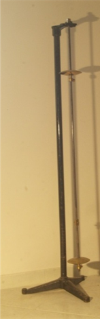

Pendolo reversibile
Scuola di provenienza: Istituto agrario "F. De Sanctis", Avellino
Settore: Meccanica
Costruttori: Issen e Benecke Berlin, Berlino, Germania
Materiali: Ottone, legno
Accessori: Nessuno
Stato di conservazione: Buono
Descrizione: Il pendolo semplice o matematico è un sistema fisico costituito da un filo inestensibile e di massa trascurabile e da un piccolo corpo fissato alla sua estremità e oscillante attorno ad un asse orizzontale, detto asse di sospensione, che non passa per il suo baricentro. Il periodo del pendolo è l’intervallo di tempo impiegato a compiere un’oscillazione completa (avanti e indietro). Galileo Galilei fu il primo ad accorgersi che la durata di ogni oscillazione di un pendolo semplice è indipendente dall’ampiezza dell’oscillazione, purché l’ampiezza angolare sia piccola, ossia in pratica finché l’angolo massimo che il filo forma con la verticale non supera qualche grado, cioè sia <10° Pendolo reversibile o di Kater con due punti di sospensione: si spostano le due lenti finché il pendolo ha la stessa durata di oscillazione tanto sospeso a uno quanto all’altro dei due punti. Si sa dalla meccanica che nel pendolo composto scambiando il centro di sospensione rimane invariata la lunghezza del pendolo ridotto equivalente (cioè avente egual pe-riodo). La distanza dei due <<coltelli>> disposti in modo da soddisfare le condizioni sopra descritte, fornisce un valore di l molto più esatto di quello che si avrebbe dal pendolo semplice. Si ha quindi un metodo molto più esatto per ricavare g dalla formula T= 2π √l/g